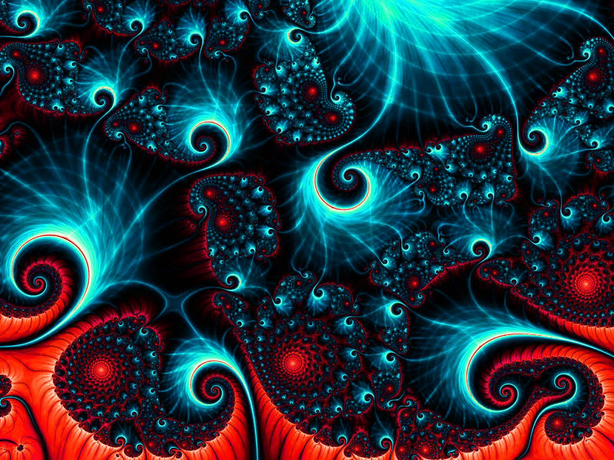

Sólin Ef sólin hol að innan mundu meira en milljón Jarðir passa inni í hana , einnig er Sólin 330.000 sinnum þyngri en Jörðin. Sólin er næstum 5 milljarða ára gömul og Sólin myndi hverfa all í einu mundi það taka u.þ.b. 8 mínutur fyrir okkur að sjá það. 